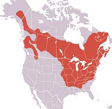

Woodchucks live from central Alaska, down through Minnesota, south to Arkansas and Georgia, and as far north as Newfoundland, but they avoid all the Western states. They prefer moist grassland near forests. They can grow to 31 pounds under ideal conditions, but are usually between 4 and 9 pounds.
Having a taste for garden vegetation and agricultural crops, they are considered major pests. Woodchucks also dig large multi-tunneled burrows which can drain ponds, undermine foundations, cause injury to farm animals and damage equipment.
Woodchucks are also considered good eating by many people living within their range, but they are not farmed (too wild in temperament). They are almost completely vegetarian but have been observed to eat some insects and snails. This does not present a trichinosis problem. It is very rare for Woodchucks to carry Plague, but Rabies is a little more common. Photo by Cephas distributed under license Creative Commons Attribution-ShareAlike v3.0 Unported.
More on Rodents & Rabbits.
 Woodchuck meat is dark but mild and tender, as it is a small vegetarian. Recipes are similar to those for rabbit or squirrel. Range Map by Andreyostr distributed under license Creative Commons Attribution-ShareAlike v3.0 Unported.
Hunting / Trapping: In areas of sustained harvest, woodchucks should not be hunted or trapped until mid to late summer, because the young would die should their mother be killed before they are mature. Woodchucks hibernate during the winter but emerge from early February to early April depending on latitude and weather. They may be trapped (they like green beans and cut apples) or hunted, but hunting is a lot harder.
Preparing: Woodchuck is gutted as soon as killed and
the blood drained, It is then chilled until skinned and dressed. Some
instructions call for hanging the animal in a very cool place for 48
hours before skinning and dressing, but most don't. Hanging, an old
tenderizing method, seems to have gone out of style.
Caution: Small grey
or reddish scent glands, looking like small blobs of fat, should be
carefully removed without breaking. They are found under the forelegs,
above the shoulder blades, along the backbone in the small of the back
and around the anus. Remove and discard all fat, then cut the carcass
into the size chunks you want for cooking or freezing. The hide is tough
and some people process it into durable leather.
Cooking Woodchuck is usually made into stew or stew filled pies. Old woodchucks (worn teeth and claws) should be parboiled before cooking. Some people soak the meat in salt brine for an hour or more before cooking. Simmer on the bone for 1 to 1-1/2 hours, depending on age, then add vegetables and simmer another 1/2 hour or so. Remove the meat from the bones, which are discarded. Strain the broth and finish the stew like any other meat stew.
ar_woodz 150321 - www.clovegarden.com